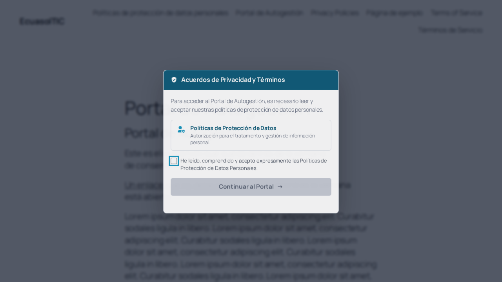
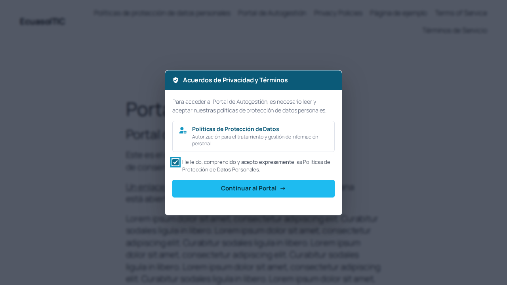
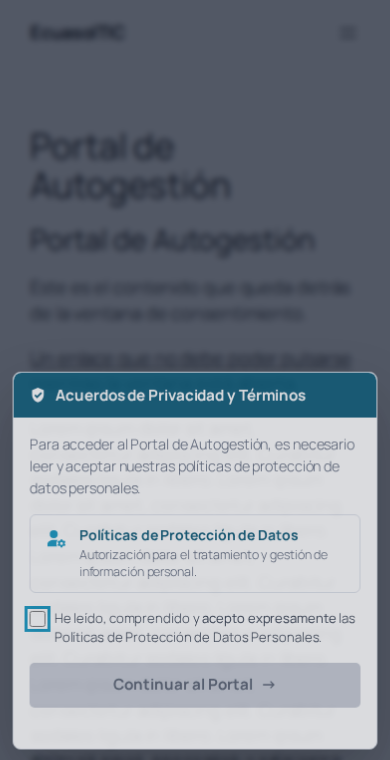
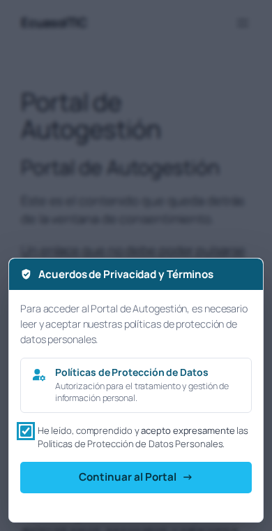
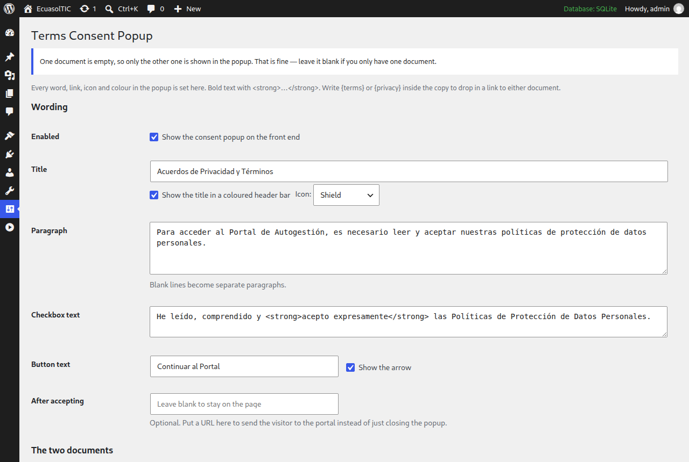
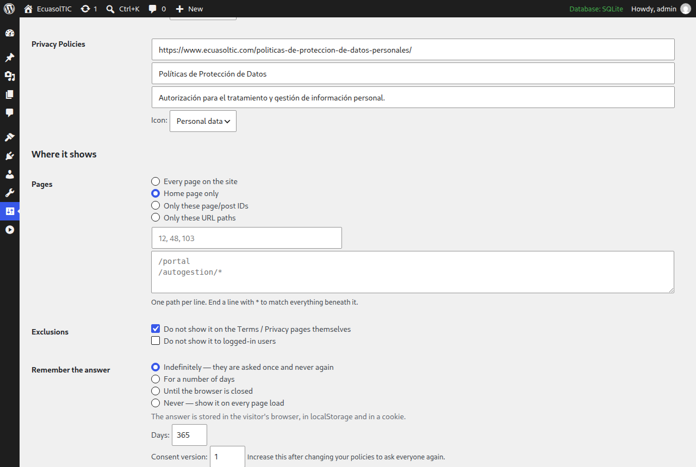

Ventana de consentimiento para ecuasoltic.com · versión 1.2.1
El botón empieza gris y no se puede pulsar. Al marcar la casilla se activa y toma el celeste de su marca.


En pantallas estrechas se apoya en la parte inferior. Si el texto crece, la ventana se desplaza por dentro, así que el botón siempre queda accesible.


Tomados de su sitio. El celeste #1ebbf0 no se usa detrás de texto
blanco: esa combinación da un contraste de 2,23:1 y el mínimo legible es 4,5:1.
Por eso la cabecera usa el mismo tono oscurecido, y el botón conserva su celeste
exacto pero con texto casi negro.
Todo el texto, los enlaces, los iconos y los colores se cambian desde aquí. Ya viene configurado: no hay nada que escribir.


| Tecla Escape | No cierra nada. |
|---|---|
| Clic en el fondo | No cierra nada. |
| Botón de cerrar | No existe. |
| Desplazar la página | Bloqueado: rueda, dedo y teclado. |
| Tabulador | No sale de la ventana. |
| Enlaces de detrás | No se pueden pulsar. |
| Borrarla con F12 | Vuelve a aparecer sola. |
| Sin JavaScript | PHP la imprime igual, la página sigue tapada. |
| La ventana | 64 comprobaciones correctas — ordenador y móvil |
|---|---|
| Los ajustes | 26 comprobaciones correctas |
| Documentos vacíos | 13 comprobaciones correctas |
| Total | 103 de 103 |